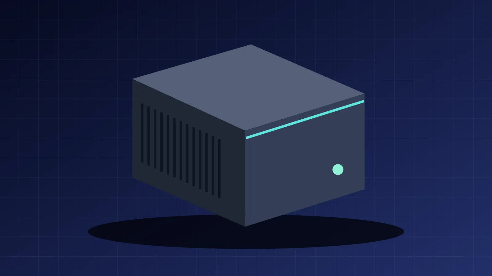

Games
GTA VI em Vice City: lançamento, plataformas e o que conferir
Rockstar confirma GTA VI disponível para PS5 e Xbox Series X|S. Veja o cenário anunciado e os cuidados antes de escolher uma edição.
Notícias, análises e explicações para acompanhar este universo.
Rockstar confirma GTA VI disponível para PS5 e Xbox Series X|S. Veja o cenário anunciado e os cuidados antes de escolher uma edição.

SteamOS, gabinete compacto e biblioteca de PC na televisão: veja a proposta da Valve e o que verificar sobre compatibilidade antes da compra.